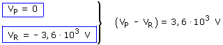
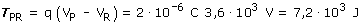

b) Calcularemos el trabajo a partir de la d.d.p (VP - VR) que obtendremos a patir de los potenciales que crean Q1 y Q2 conjuntamente en los puntos P y R   Un trabajo positivo significa que la carga ganará velocidad en el recorrido |